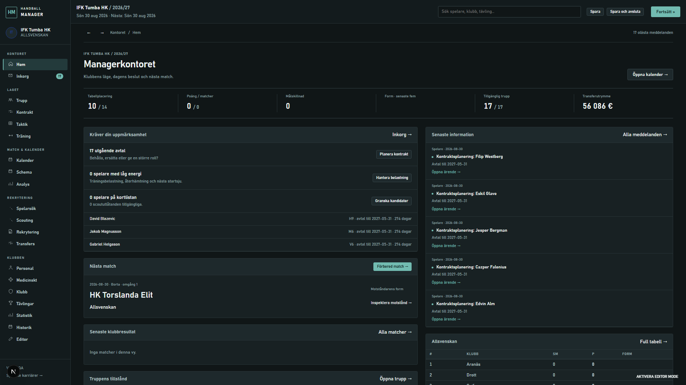
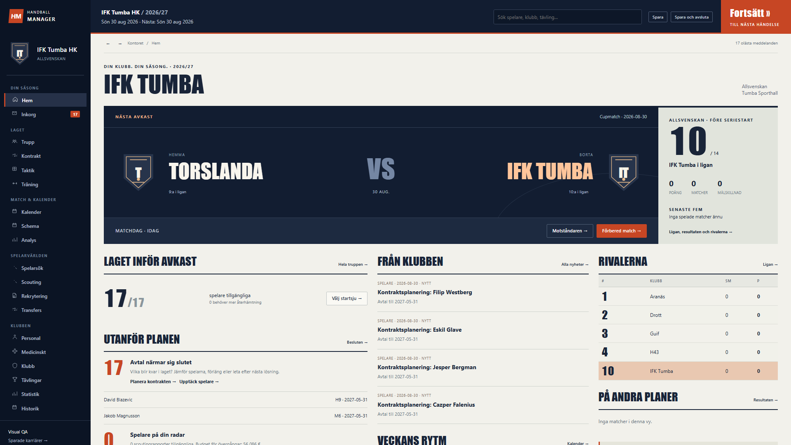

Same club, starting date and routes. Actual Chromium captures.


Open either image for its full-resolution capture. Screens preserve the useful data; the composition, identity and sporting hierarchy have changed.